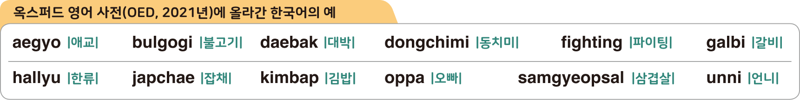

자료 읽기옥스퍼드 영어 사전에 등재된 한국어
‘대박’, ‘먹방’, ‘김밥’ 등 한국어 낱말 스물여섯 가지가 영국의 옥스퍼드 영어 사전에 표제어로 새롭게 올랐다. 한국의 영화, 음악 등 한류 문화의 성공으로 인해 한국어가 전 세계 영어 사용자들에게 노출되며 나타난 현상이다. 이번에 등재된 표제어 에는 특히 음식 관련 용어가 많았고, 세계를 강타한 한국의 대중문화 용어도 등재되었다.
- 『한겨레신문』, 2021. 10. 6.

● 옥스퍼드 영어 사전에 한국어가 많이 올랐다는 것은 무엇을 의미할까?
옥스퍼드 영어 사전에 한국어가 오른 것은 한국의 영화, 드라마, 가요 등이 세계적으로 인기를 얻으면서 한국어와 한국 문화에 대한 관심이 높아졌기 때문이다.